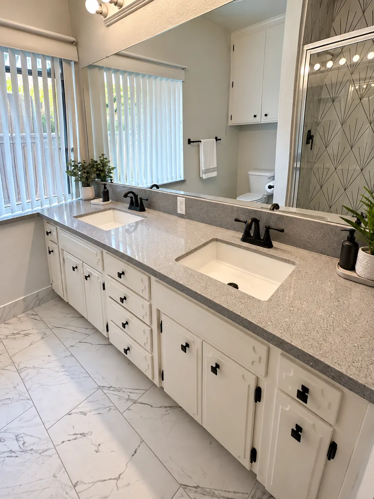

Built for How Clovis Homes Are Actually Used
Clovis is one of our most active service areas, and the reason is pretty consistent: homeowners here tend to invest seriously in their properties. Master bath remodels with freestanding tubs, large-format tile, and custom walk-in showers are some of the most common requests we get from Clovis clients.
A lot of that comes down to the housing stock. Clovis's newer developments — Harlan Ranch, Loma Vista, and the neighborhoods around Old Town Clovis — tend to have larger bathrooms with more room to work with, which opens the door to higher-end finishes that wouldn't fit in a smaller, older layout. Andrey personally visits every Clovis home, measures the space, and gives you a straight answer on what's possible and what it costs — no sales rep, no subcontractor handoff.
Get a Free Estimate
Shower & Tub Replacement
Frameless glass showers and freestanding soaking tubs are two of the most requested upgrades we build in Clovis, especially in master bathrooms with room to make a statement. We handle the full tear-out and rebuild, including:
- Walk-in showers with custom tile or prefab surrounds
- Frameless and semi-frameless glass enclosures
- Freestanding soaking tubs and alcove tubs
- Shower niches, benches, and accessibility features
- Full waterproofing and membrane installation
Tile & Flooring Installation
Large-format tile is one of the signature looks in newer Clovis bathrooms, and it's exacting work — fewer grout lines mean less room to hide an uneven substrate. We handle the floor prep as carefully as the tile itself.
- Large-format porcelain, ceramic, and natural stone flooring
- Shower wall tile — subway, herringbone, vertical stacked, and more
- Feature walls and decorative accents
- Tile demo, substrate repair, and waterproofing
- Grout sealing and caulking for a long-lasting finish


Vanity & Fixture Updates
For Clovis's larger bathroom footprints, a double vanity is one of the highest-impact changes you can make. We supply and install:
- Single and double vanities — freestanding and wall-mounted
- Undermount and vessel sinks with new faucet sets
- Frameless and LED-lit mirrors
- Vanity lighting, exhaust fans, and GFCI outlets
- Toilet replacement and bidet installation
Plumbing & Electrical
We handle plumbing and electrical in-house — no third-party coordination, no scheduling delays. Everything is done to California code and coordinated with the City of Clovis's permitting requirements when a permit is needed.
- Supply line and drain line installation or relocation
- Water pressure optimization and shut-off valve replacement
- Recessed lighting, vanity light bars, and dimmer switches
- GFCI outlet installation (code required near water sources)
- Exhaust fan installation and venting